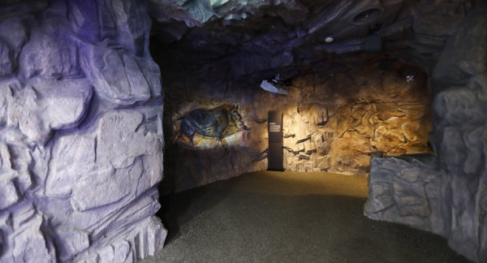
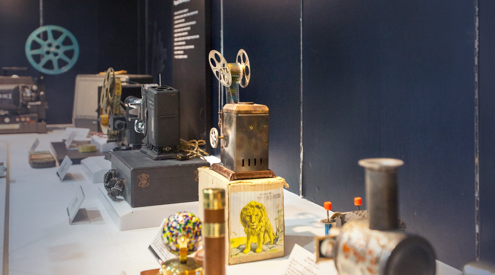
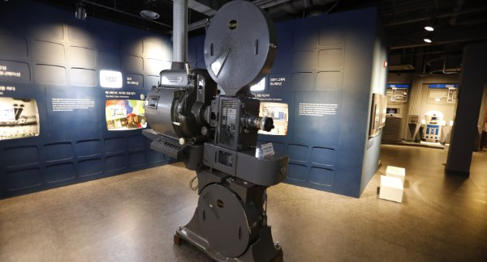
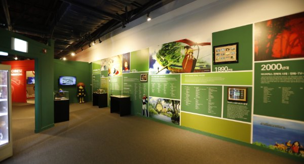
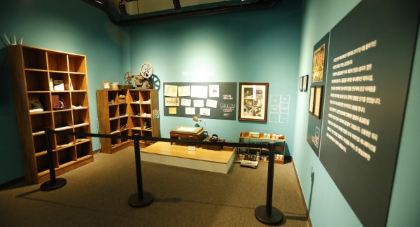
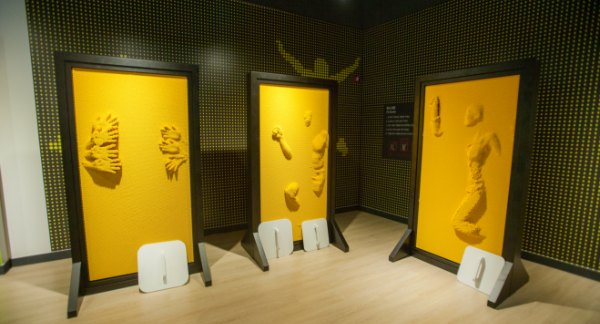
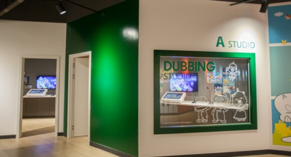
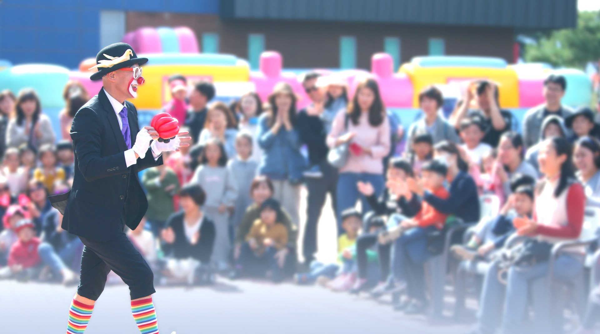
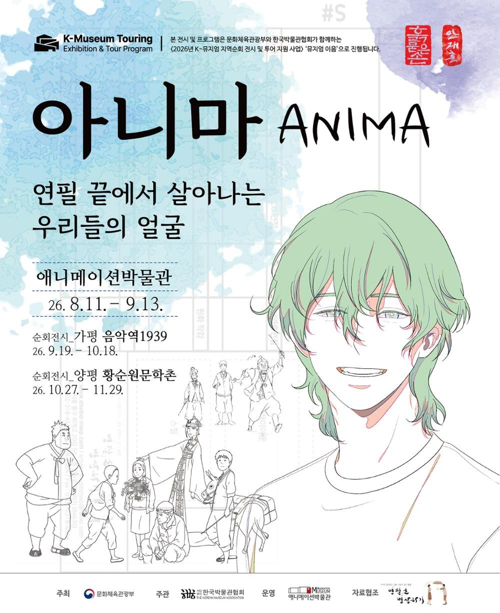

동굴벽화
1층 · 상설 전시
애니메이션은 무슨 뜻일까요? 기원전 1만 년 경 알타미라 동굴에서 그 뜻과 원리를 알아보세요.
전시 자세히
사진을 문질러 보세요. 손이 닿은 곳이 1초에 12장 그린 애니메이션이 됩니다.
우리나라에 하나뿐인 애니메이션박물관입니다. 2003년 10월 1일 문을 연 뒤 480만 명 넘게(토이로봇관 포함) 다녀갔습니다. 애니메이션의 기원과 탄생, 종류와 제작기법, 한국과 세계 애니메이션의 역사를 살펴보고, 음향효과와 더빙을 직접 만들어 볼 수 있습니다.

1층 · 상설 전시
애니메이션은 무슨 뜻일까요? 기원전 1만 년 경 알타미라 동굴에서 그 뜻과 원리를 알아보세요.
전시 자세히
1층 · 상설 전시
영사기는 어떻게 시작되었을까요? 환등기에서 시작된 영사기의 발달 과정과 1890년대에 쓰던 유리필름을 만나 보세요.
전시 자세히
1층 · 상설 전시
애니메이션의 탄생과 발전 과정을 영상과 다양한 전시물로 살펴보세요. 애니메이션의 종류와 한국 애니메이션의 역사를 알 수 있습니다.
전시 자세히
2층 · 상설 전시
한국 애니메이션의 산 역사, 故 신동헌 감독을 기리는 공간입니다.
전시 자세히
2층 · 체험
몸으로 느껴 보는 핀스크린 체험, 주인공 체험, 캐릭터 변검 체험을 할 수 있습니다.
체험 자세히
2층 · 체험
소리를 만들어 내는 폴리아티스트 체험과 더빙 체험을 할 수 있습니다.
체험 자세히오전 10시에 열어 오후 6시에 닫고, 입장은 오후 5시에 마감합니다. 매주 월요일(월요일이 공휴일이면 다음 날)과 1월 1일, 설·추석 당일은 쉽니다. 둘러보는 데 1시간 30분~2시간쯤 걸리니 오후 4시 전에 들어오시길 권합니다.
관람권 한 장으로 애니메이션박물관과 토이로봇관을 함께 봅니다. 개인 7,000원 · 단체(20인 이상) 5,600원 · 춘천시민 5,000원(단체·춘천시민은 현장 발권). 24개월 미만, 1~3등급 중증장애인(동반 1인), 국가유공자(동반 배우자), 자료 기증자(가족 포함), 병역명문가(본인)는 무료입니다. 매월 마지막 주 수요일 '문화가 있는 날'(공휴일·7월 제외)과 만 18세 미만 자녀 2명 이상과 함께 오는 다자녀 가족은 20% 할인됩니다.
온라인 예매는 당일 오후 3시까지 할 수 있고, 예매 1시간 뒤부터 쓸 수 있습니다.

엄마 아빠의 추억과 아이들의 상상이, 우리의 과거와 미래가 소통하는 공간. 애니메이션을 주제로 누구나 함께 즐길 수 있도록 교육·행사·체험을 기획해 운영하고, 해마다 두 번 이상 애니메이션 기획전을 엽니다.
제21회 기획전 · 순회 중
《아니마(ANIMA) — 연필 끝에서 살아나는 우리들의 얼굴》. 애니메이션박물관(26.8.11–9.13)에서 시작해 가평 음악역1939(9.19–10.18)를 거쳐, 지금은 양평 황순원문학촌(10.27–11.29)에서 이어집니다.

강원특별자치도 춘천시 서면 박사로 854 (24461)
애니메이션박물관 033-245-6470 · 토이로봇관 033-245-6460